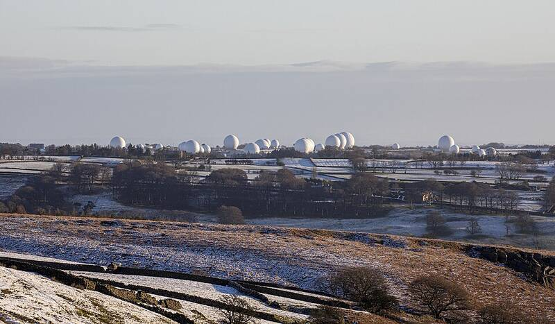

RAF Menwith Hill
North Yorkshire, England

A satellite ground station used by the U.S. National Security Agency, known for its golf-ball-shaped radomes. 1
Open in the interactive Watcher
Sources
- RAF Menwith Hill Wikipedia
North Yorkshire, England

A satellite ground station used by the U.S. National Security Agency, known for its golf-ball-shaped radomes. 1
Open in the interactive Watcher